| País | FX R² | FX RMSE | 10Y R² | 10Y RMSE |
|---|---|---|---|---|
| CLP | 0.959 | 0.04 | 0.646 | 0.62 |
| BRL | 0.963 | 0.06 | 0.605 | 1.32 |
| MXN | 0.882 | 0.06 | 0.907 | 0.44 |
| PEN | 0.901 | 0.04 | 0.646 | 0.63 |
| COP | 0.969 | 0.05 | 0.824 | 0.92 |
Tipo de cambio, tasas largas y stress macrofinanciero en LatAm
Modelos diarios para CLP, BRL, MXN, PEN y COP
Proyecto aplicado que estima desviaciones de tipo de cambio y tasas soberanas a 10 años respecto de fundamentos externos observables en América Latina.
Qué mide el proyecto
Este proyecto compara movimientos de tipo de cambio y tasas soberanas a 10 años en cinco economías latinoamericanas. La idea no es mirar depreciaciones o aumentos de tasas en bruto, sino separar una parte explicada por fundamentos externos observables y una parte residual estandarizada.
El residuo no debe leerse mecánicamente como “shock doméstico puro”. Es una métrica de monitoreo: cuando el residuo se vuelve persistente o extremo, el caso merece una revisión más detallada de factores locales, liquidez, riesgo político, sorpresas fiscales o shocks regulatorios.
Cobertura
5 países
Chile, Brasil, México, Perú y Colombia.
Mercados
FX + 10Y
Tipo de cambio bilateral y tasa soberana larga.
Frecuencia
Diaria
Series financieras armonizadas desde 2010.
Salida central
z-score
Residuo normalizado por país y mercado.
Especificación del modelo
La estimación se organiza en dos etapas. La primera etapa obtiene residuos de tipo de cambio y de tasa larga para cada país. La segunda etapa resume la asociación entre presión cambiaria residual y spread soberano 10Y frente a EE.UU.
Primera etapa: tipo de cambio
\[ \log S_{i,t} = \alpha_i + \beta_i t + \rho_i \log\left(\frac{CPI_{i,t}}{CPI_{US,t}}\right) + \Gamma_i' X_t + u^{FX}_{i,t} \]
Donde \(S_{i,t}\) es el tipo de cambio bilateral frente al dólar, expresado como moneda local por USD. El término de precios relativos aproxima presiones de inflación relativa contra EE.UU. El vector \(X_t\) agrupa fundamentos externos comunes: petróleo WTI, cobre, Nasdaq, equity China, VIX, dólar multilateral y CNY/USD.
El indicador publicado es el residuo estandarizado:
\[ z^{FX}_{i,t}=\frac{u^{FX}_{i,t}-\bar u^{FX}_{i}}{\sigma(u^{FX}_{i})} \]
Primera etapa: tasa soberana 10Y
\[ y^{10}_{i,t} = \delta_i + \phi_i y^{10}_{US,t} + \Theta_i' G_t + \eta_i t + u^{10Y}_{i,t} \]
Donde \(y^{10}_{i,t}\) es la tasa soberana local a 10 años y \(y^{10}_{US,t}\) es la tasa Treasury 10Y. El vector \(G_t\) incluye factores globales financieros: VIX, Nasdaq, dólar multilateral y CNY/USD. La salida comparable entre países es:
\[ z^{10Y}_{i,t}=\frac{u^{10Y}_{i,t}-\bar u^{10Y}_{i}}{\sigma(u^{10Y}_{i})} \]
Segunda etapa: presión cambiaria y spread largo
\[ z^{FX}_{i,t} = a_i + b_i\left(y^{10}_{i,t}-y^{10}_{US,t}\right)+e_{i,t} \]
Esta ecuación es descriptiva. Resume si los episodios de presión cambiaria residual tienden a coincidir con un mayor spread soberano largo frente a EE.UU. No identifica causalidad estructural.
Dashboard regional
Los gráficos globales muestran la sincronización regional de los residuos. Las líneas en torno a ±2 desvíos estándar funcionan como referencia visual de episodios extremos; no son una regla mecánica de crisis.
Tipo de cambio
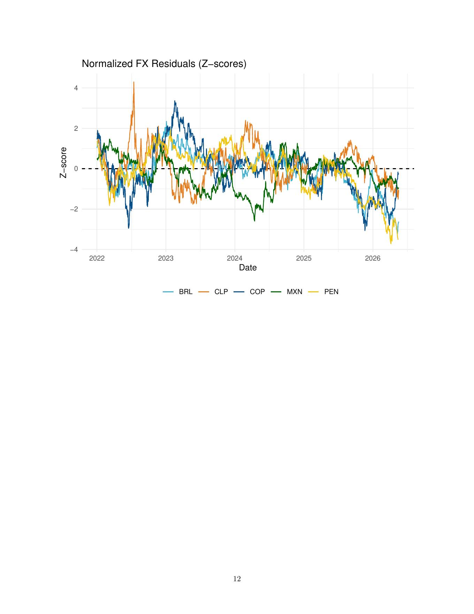
Tasas soberanas 10Y
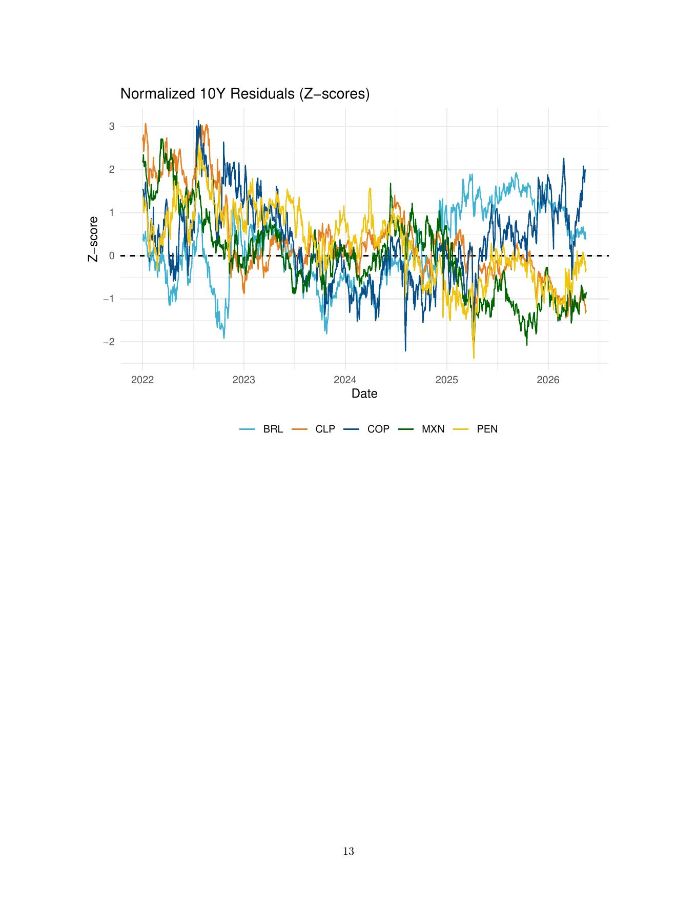
Estimaciones principales
Ajuste de primera etapa
El ajuste del bloque cambiario suele ser mayor que el de tasas largas. Esto es razonable: las tasas soberanas incorporan prima de riesgo local, expectativas fiscales, liquidez y shocks de régimen monetario que una especificación global lineal no captura completamente.
Segunda etapa
| País | Coeficiente bᵢ | R² | Lectura |
|---|---|---|---|
| CLP | 0.345 | 0.076 | relacion positiva relevante |
| BRL | 0.011 | 0.000 | relacion practicamente nula |
| MXN | 0.317 | 0.072 | relacion positiva relevante |
| PEN | 0.426 | 0.160 | relacion positiva mas marcada |
| COP | 0.028 | 0.002 | relacion practicamente nula |
El coeficiente \(b_i\) resume cuánto se asocia el residuo cambiario normalizado con el spread soberano 10Y. Un coeficiente positivo indica que, en esa muestra, mayores spreads largos tienden a coincidir con mayor presión cambiaria residual.
Selector por país
Usa el selector para revisar cada país con la misma plantilla: primero el stress conjunto de FX y 10Y, luego la segunda etapa entre residuo cambiario y spread 10Y frente a EE.UU.
Chile · CLPSegunda etapa: bᵢ = 0.345 · R² = 0.076
La presión cambiaria residual y el spread 10Y muestran una asociación positiva. La lectura es útil como monitoreo macrofinanciero, no como identificación causal.
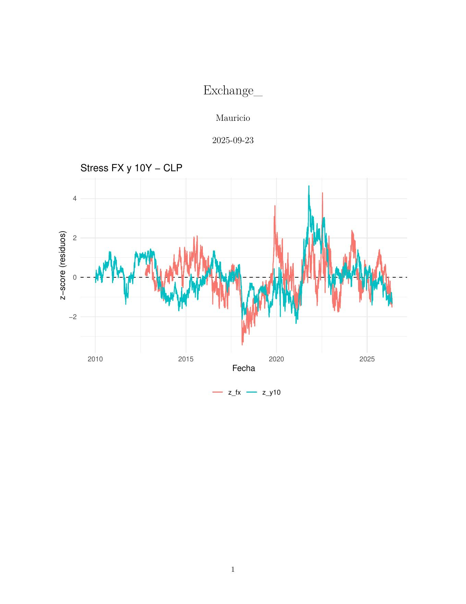
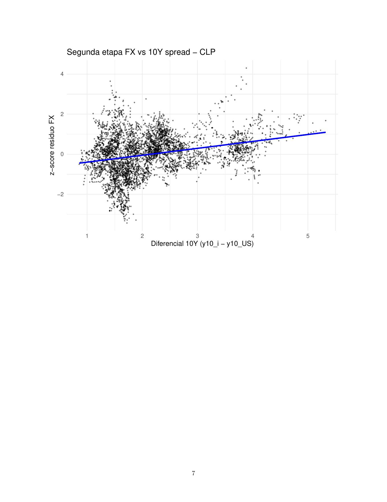
Brasil · BRLSegunda etapa: bᵢ = 0.011 · R² = 0.000
La relación FX residual–spread 10Y es débil en esta especificación. Brasil probablemente requiere controles locales adicionales, especialmente riesgo fiscal, política doméstica y primas de riesgo idiosincráticas.
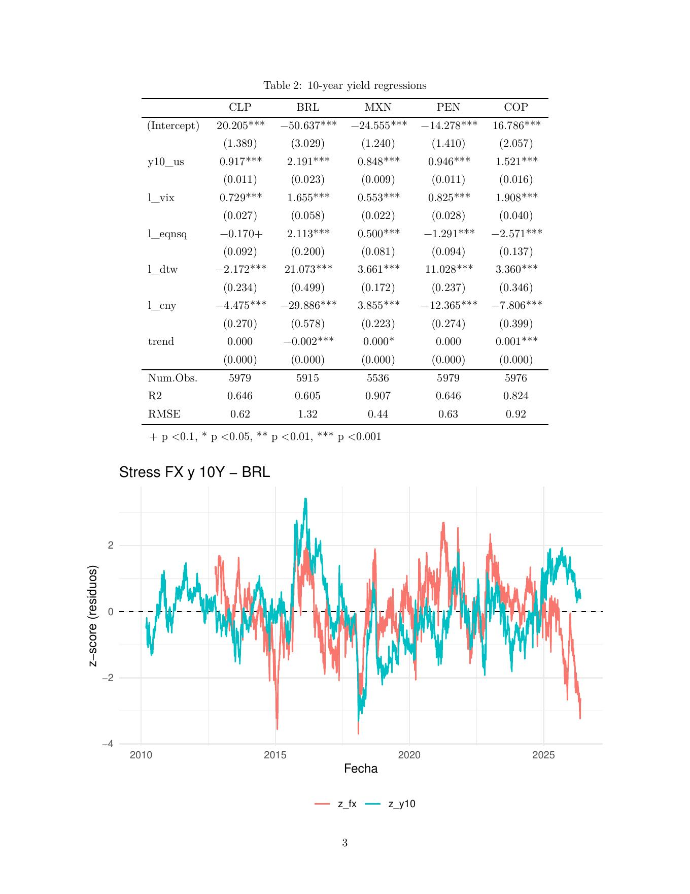
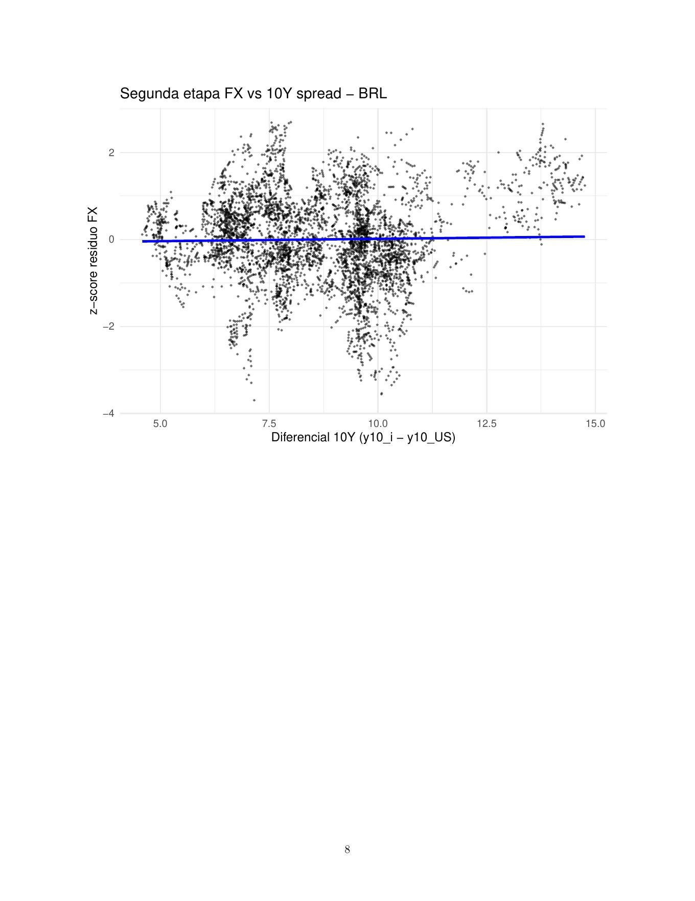
México · MXNSegunda etapa: bᵢ = 0.317 · R² = 0.072
La asociación es positiva y relativamente clara. Es consistente con episodios donde depreciación residual y aumento del spread largo se mueven conjuntamente.
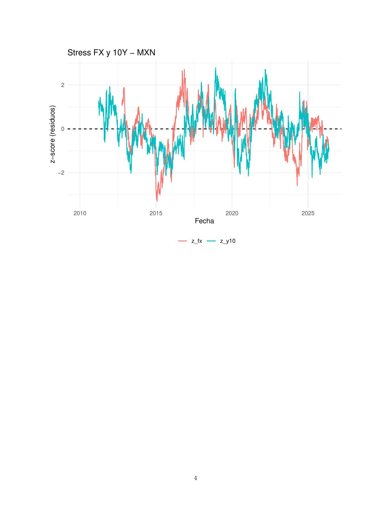
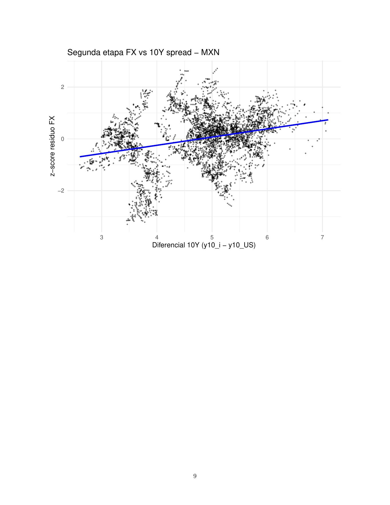
Perú · PENSegunda etapa: bᵢ = 0.426 · R² = 0.160
Es el caso con vínculo más marcado en la segunda etapa. La interpretación debe considerar la menor volatilidad cambiaria relativa y la gestión activa del mercado FX.
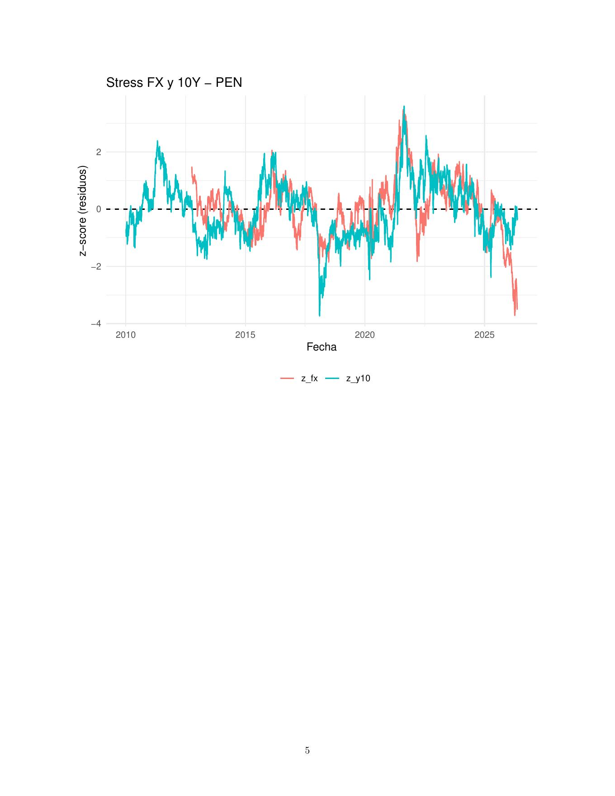
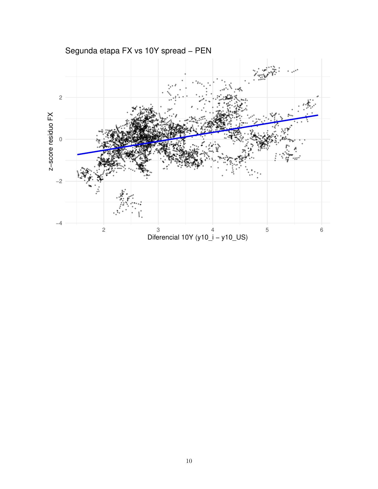
Colombia · COPSegunda etapa: bᵢ = 0.028 · R² = 0.002
La asociación es positiva pero económicamente pequeña. La lectura por país debería complementarse con petróleo, fiscal, liquidez local y primas de riesgo soberano.
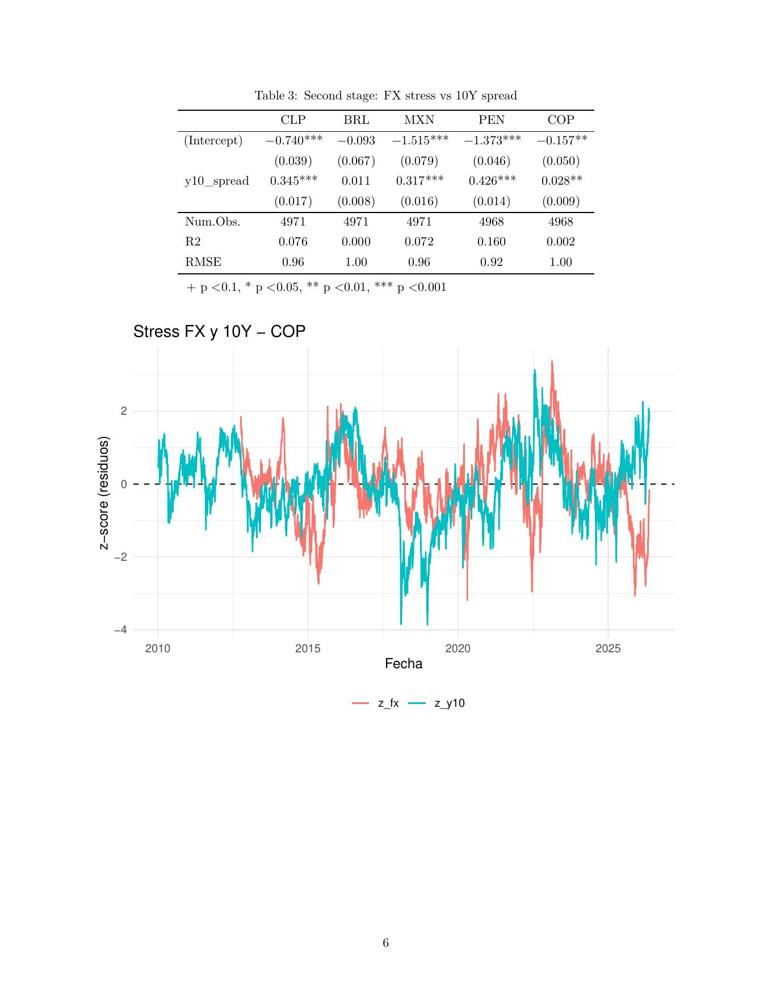
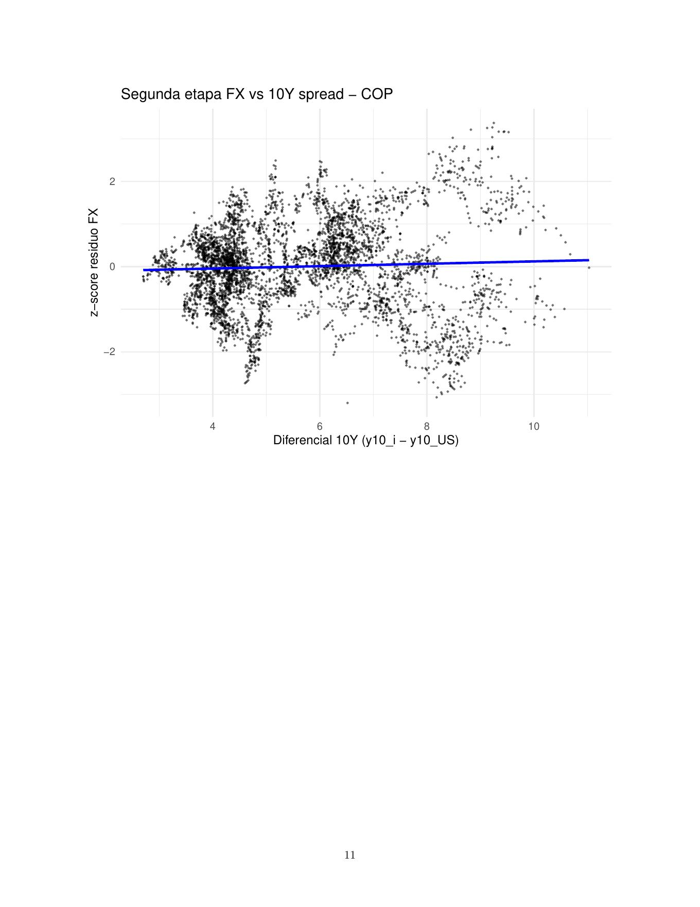
Interpretación económica
La contribución del proyecto es disciplinar la lectura de stress macrofinanciero regional. En vez de mirar movimientos financieros aislados, el ejercicio pregunta si esos movimientos son inusuales después de controlar por un conjunto común de fundamentos externos.
Qué sí permite
Comparar países bajo una misma especificación, detectar episodios residuales extremos y ordenar la revisión de eventos locales.
Qué no permite
No identifica causalidad estructural ni separa perfectamente shocks domésticos, riesgo político, liquidez, fiscal o errores de medición.
Próximo salto
Agregar validación fuera de muestra, ventanas rolling, EMBI/CDS y un índice sintético regional de stress con umbrales explícitos.